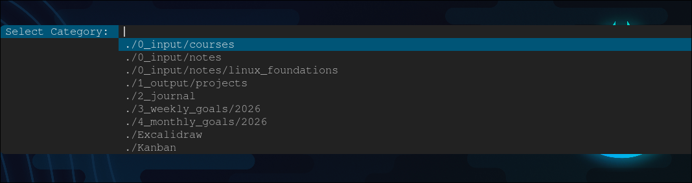

I'm typically not the person to make New Year's resolutions, especially regarding career goals. I usually keep goals in my head, but there is no accountability if they're not written down somewhere. This year, I decided to change that. Three months ago, I joined KubeCraft and began implementing the Zettelkasten system, a method for intentional note-taking and knowledge linking.
When I started Kubecraft, I was taking daily notes, but that went out the window 2-3 weeks later. Building a habit is tough. While completing the Arch Linux module, I found myself with scattered Obsidian notes on both my phone and laptop. Keeping my instructions updated became a nightmare as I tweaked my Arch system. I was also failing to track my goals or even how to tackle the modules within a given timeframe. Creating daily, weekly, or monthly notes felt cumbersome. My pure laziness is what got in the way of building a habit.
Since dmenu is my menu of choice on Arch, I decided to create a script to initiate a new note via a keyboard shortcut. Inspired by @BreadonPenguins, this script removes the friction of starting to write. While my script and folder structure will surely evolve, I've been using this shortcut seamlessly for nearly a month. I value Obsidian for its simple vault interface, interactive graph, Excalidraw, and Kanban plugin, but my actual writing stays in Neovim.
Directory Structure
My current structure has changed several times, but this layout is working well.
- input: internal note-taking
- output: projects or blogs for sharing
- journal: daily logs and reflections
- weekly_goals & monthly_goals: goal tracking
- Excalidraw: visual brainstorming and drawings
- Kanban: active, work-in progress

Setting the Stage
Every script starts with a shebang. Use #!/bin/bash to avoid path hijacking associated with #!/usr/bin/env bash. To keep the script portable, I defined variables for my paths and tools. If I switch terminal emulators or move my vault path, I only have to change a line.
#!/bin/bash
folder=$HOME/obsidian/
FONT="Monospace:size=13"
TERMINAL="alacritty"
Smart Folders
Filtering my subfolders was the key to making this script usable. Without filtering, dmenu would output every single directory in my vault. Instead, I used find to crawl the $folder and hide the root folders, 2025 folders, and any hidden files.
choice=$(cd "$folder" && find . -mindepth 1 -type d \
-not -path '*/.*' \
-regextype posix-extended \
-not -regex ".*(0_input|1_output|1_output/neovim|3_weekly_goals/2025|4_monthly_goals/2025)" \
-not -regex ".*/3_weekly_goals$" \
-not -regex ".*/4_monthly_goals$" | \
sort | dmenu -fn "$FONT" -l 25 -i -p "Select Category: ") || exit 0
A breakdown of the logic:
- find "$folder": scan the vault path
- -mindepth 1: omit the root folder and only include subfolders
- -type d: filter for directories only
- -not -path '*/.*': hide hidden directories (
.obsidian) - -regextype posix-extended: enable regex to group multiple folders
- -not -regex "...": act as an "ignore list" to keep the menu focused on active categories
- dmenu: Take the filtered list and turn it into a searchable, top-bar menu that is sorted and case-insensitive.
Template Automation
After selecting a folder, the script ensures that the path is valid. If it isn't, the script exits. Once a valid folder is selected, it prompts for a note name. If left blank, the script defaults to a timestamp for the filename. The script then injects a YAML frontmatter (title, date, and tags) using a Heredoc. This metadata is used by Obsidian’s dataview plugin and graph analysis. The .md extension is appended automatically.
name=$(echo "" | dmenu -fn "$FONT" -p "New Note Name: " <&-) || exit 0
: "${name:=$(date +%F_%H%M)}"
full_path="${dir}${name}.md"
# Only add frontmatter if the file does not exist or is empty. Use a Heredoc
if [ ! -s "$full_path" ]; then
cat < "$full_path"
...
Shellcheck and Keybinding
The end of the Bash code launches a new terminal instance and detaches it from the script process. If the file is saved, it's created, otherwise :q will discard the note. I used shellcheck to verify the script's logic and chmod +x to make it executable. Lastly, I created a keybinding in my hyprland.conf. The Zettelkasten method is now literally at my fingertips by pressing, SUPER + N.
bind = $mainMod, N, exec, ~/.local/bin/script_menu_obsidian
The View Ahead
Having just finished the Linux Foundations module, this was a very practical exercise. Since this is only my second script, I used Gemini to bridge a few technical gaps, but the real progress happened through several days of trial and error to fit my specific needs. My New Year's resolution is still going strong as January has come to an end and the friction of note-taking is officially gone. Now I get to watch my Obsidian graph view grow and visualize the relationship between the notes in my vault. Most importantly, I finally have a system in place to hold myself accountable for my 2026 goals.